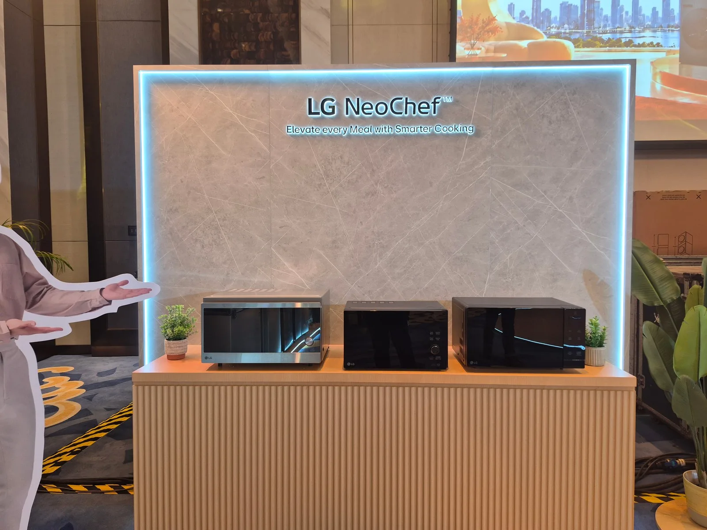

厨房智能硬件 / 品类功能融合
LG预展多功能NeoChef，把微波、对流烘烤与空气炸装进一台设备
菲律宾2027家电预展提供了一条小厨房思路：在有限台面上，组合更多烹饪方式。

11月5日，UnGeek报道LG前一天在菲律宾Solaire North举行的家电经销商峰会。面向当地市场的2027产品阵容中，NeoChef Smart Inverter Convection Oven集成微波加热、对流烘烤及空气炸模式。报道将它列为小空间厨房值得关注的设备。
同场还展示了带制冰功能及LCD温控面板的Fit & Max法式多门冰箱。产品具体价格和上市时间仍待公布。本次属于区域产品预展，不能等同于全球首发；NeoChef的多种加热模式，也不意味着它具备报道中洗衣产品的AI识别功能。
UnGeek · LG菲律宾2027家电预展现场报道 · 报道11月5日；活动11月4日WhereIsEdUy · LG经销商峰会观察 · 报道11月5日；活动11月4日报道：11月5日；活动：11月4日，作为近期厨房硬件补选。菲律宾2027产品计划，具体上市日未公布。